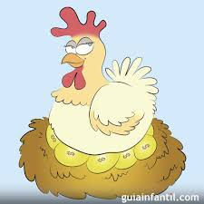
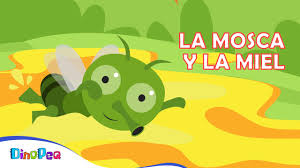
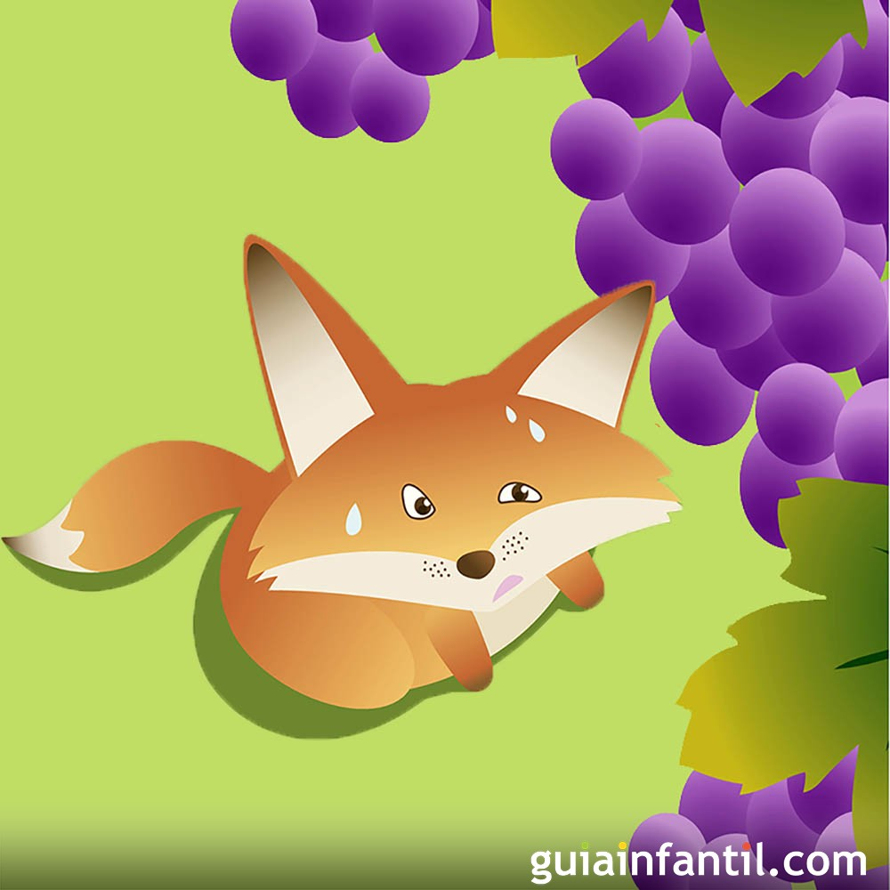
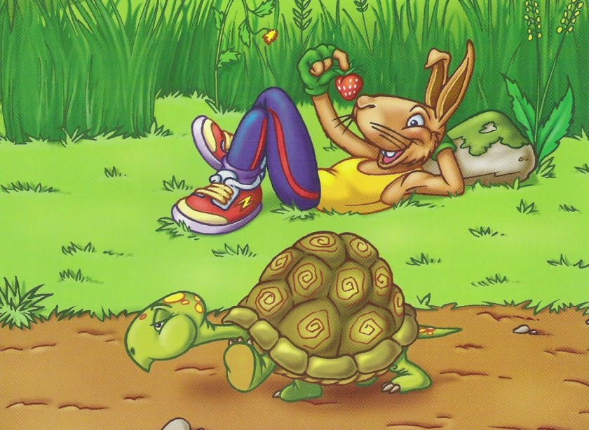
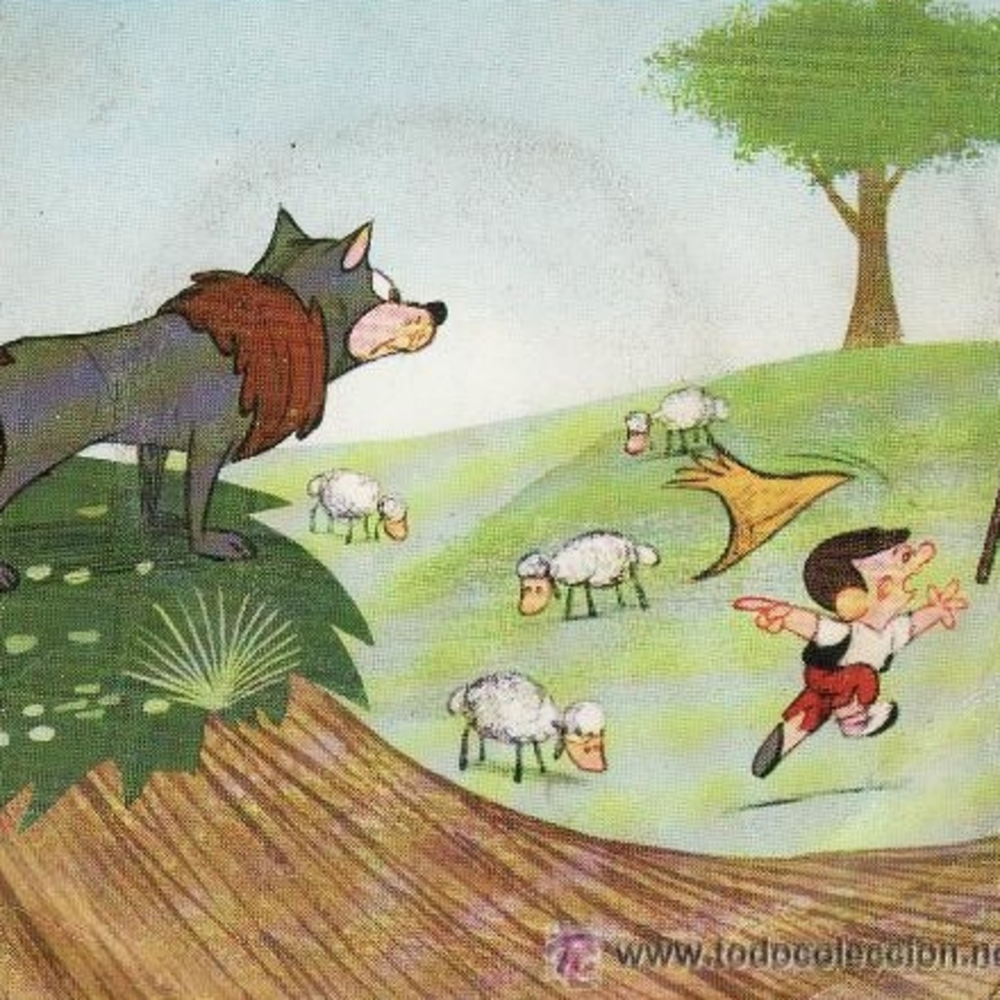
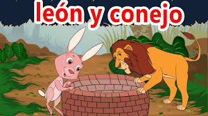
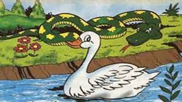
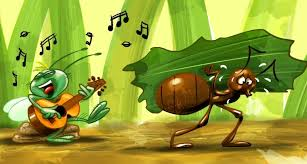
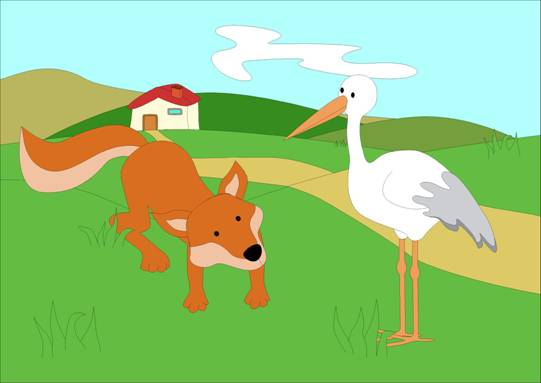
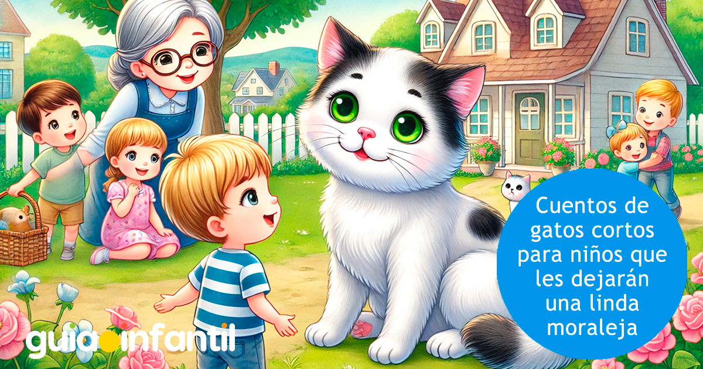

Cuentos
1. La gallina de los huevos de oro
2. Las moscas y la miel
3. La zorra y las uvas
4. La tortuga y la liebre
5. El pastor y el lobo
6. El león y el conejo
7. El pato y la serpiente
8. La cigarra y la hormiga
9. El perro y el cocodrilo
10. La zorra y la cigüeña
11. La sabiduria del gato Tito
La gallina de los huevos de oro
Érase un labrador tan pobre tan pobre que ni siquiera poseía una vaca. Era el más pobre de la aldea.
Y resulta que un día, trabajando en el campo y lamentándose de su suerte, apareció un enanito que le dijo:
Buen hombre, he oído tus lamentaciones y voy a hacer que tu fortuna cambie. Toma esta gallina. Es tan
maravillosa que todos los días pone un huevo de oro.

El enanito desapareció sin más ni más y el labrador llevó la gallina a su corral. Al día siguiente, ¡oh
sorpresa!, encontró un huevo de oro. Lo puso en una cestita y se fue con ella a la ciudad, donde vendió el
huevo por un alto precio. Al día siguiente, loco de alegría, encontró otro huevo de oro. ¡Por fin la fortuna
había entrado a su casa y todos los días tenía un nuevo huevo! Fue así como poco a poco, con el producto de
la venta de los huevos, fue convirtiéndose en el hombre más rico de la comarca. Sin embargo, una insensata
avaricia hizo presa su corazón y pensó:
«¿Por qué esperar a que cada día la gallina ponga un huevo? Mejor la mato y descubriré la mina de oro que
lleva dentro».
Y así lo hizo, pero en el interior de la gallina no encontró ninguna mina. A causa de la avaricia tan
desmedida que tuvo, este tonto aldeano malogró la fortuna que tenía.
Félix María de Samaniego
Quien se desespera por obtener riquezas se arriesga a perderlo todo.
Las moscas y la miel

De un panal se derramó su deliciosa miel, y las moscas acudieron ansiosas a devorarla. Y era tan dulce que no
podían dejarla. Pero sus patas se fueron prendiendo en la miel y no pudieron alzar el vuelo de nuevo. Ya a
punto de ahogarse en su tesoro, exclamaron:
—¡Nos morimos, desgraciadas nosotras, por quererlo tomar todo en un instante de placer!
Esopo
Hay que saber disfrutar de los placeres de la vida, pero de manera prudente.
La zorra y las uvas
Érase un labrador tan pobre tan pobre que ni siquiera poseía una vaca. Era el más pobre de la aldea.
Y resulta que un día, trabajando en el campo y lamentándose de su suerte, apareció un enanito que le
dijo:
—Buen hombre, he oído tus lamentaciones y voy a hacer que tu fortuna cambie. Toma esta gallina. Es tan
maravillosa que todos los días pone un huevo de oro.

El enanito desapareció sin más ni más y el labrador llevó la gallina a su corral. Al día siguiente, ¡oh
sorpresa!, encontró un huevo de oro. Lo puso en una cestita y se fue con ella a la ciudad, donde vendió
el huevo por un alto precio. Al día siguiente, loco de alegría, encontró otro huevo de oro. ¡Por fin la
fortuna había entrado a su casa y todos los días tenía un nuevo huevo! Fue así como poco a poco, con el
producto de la venta de los huevos, fue convirtiéndose en el hombre más rico de la comarca. Sin embargo,
una insensata avaricia hizo presa su corazón y pensó:
«¿Por qué esperar a que cada día la gallina ponga un huevo? Mejor la mato y descubriré la mina de oro que
lleva dentro».
Y así lo hizo, pero en el interior de la gallina no encontró ninguna mina. A causa de la avaricia tan
desmedida que tuvo, este tonto aldeano malogró la fortuna que tenía.
Esopo
Si tienes interés de verdad por conseguir algo, no desistas. Esfuérzate y persevera hasta conseguirlo,
sin poner excusas ni fingir.
La tortuga y la liebre
Había una vez una liebre muy vanidosa que se pasaba todo el día presumiendo de lo rápido que podía correr.
Cansada de siempre escuchar sus alardes, la tortuga la retó a competir en una carrera.
—¡Qué chistosa que eres, tortuga, debes estar bromeando! —dijo la liebre mientras se reía a carcajadas.
—Ya veremos, liebre. Guarda tus palabras hasta después de la carrera —respondió la tortuga.
Al día siguiente los animales del bosque se reunieron para presenciar la carrera. Todos querían ver si la
tortuga en realidad podía vencer a la liebre. El oso les dio la salida gritando:
—¡En sus marcas, listos, ya!
La liebre se adelantó inmediatamente, corrió y corrió más rápido que nunca. Luego miró hacia atrás y vio que
la tortuga se encontraba a unos pocos pasos de la línea de inicio.
«Tortuga lenta e ingenua —pensó la liebre—. ¿Por qué habrá querido competir si no tiene ninguna oportunidad
de ganar?».

Confiada en que iba a vencer, la liebre decidió parar en medio del camino para descansar debajo de un árbol.
La fresca y agradable sombra era muy relajante y así la liebre se quedó dormida.
Mientras tanto, la tortuga siguió caminando despacio, pero sin pausa. Estaba decidida a no darse por vencida.
Pronto se encontró con la liebre durmiendo plácidamente y poco a poco se acercó a la meta. Todos los
animales del bosque comenzaron a gritar de emoción y los gritos despertaron a la liebre, que no podía dar
crédito a sus ojos: la tortuga estaba cruzando la meta y ella había perdido la carrera.
Esopo
Hay que tener una buena actitud y no burlarse de los demás, porque se puede conseguir más con constancia y
disciplina que con prisa y descuido.
El pastor y el lobo
Érase una vez un pequeño pastor que se pasaba la mayor parte del tiempo paseando y cuidando de sus ovejas.
Todas las mañanas salía a la pradera con su rebaño y muchas veces pensaba en las cosas que podía hacer para
divertirse. Un día tuvo una idea. Decidió que pasaría un buen rato divirtiéndose a costa de la gente del
pueblo. Se acercó y empezó a gritar:
—¡Socorro, el lobo! ¡Que viene el lobo!
Los aldeanos cogieron lo que tenían a mano y fueron a ayudar al pobre pastorcito que pedía auxilio, pero
cuando llegaron allí, descubrieron que todo había sido una broma pesada y lo vieron reírse a carcajadas. Se
enfadaron y se fueron, pero como el pastor se había divertido mucho, repitió la broma. Así que cuando los
vio ya suficientemente lejos, volvió a gritar:
—¡Socorro, el lobo! ¡Que viene el lobo!
Ellos volvieron corriendo, pensando que esta vez sí que se había presentado el lobo y que realmente el pastor
necesitaba de su ayuda. Pero al llegar, se lo encontraron de nuevo riéndose por los suelos. Esta vez los
aldeanos se enfadaron aún más y se fueron.

A la mañana siguiente el pastor, sin haberse arrepentido de lo que había hecho, decidió repetir la broma,
pero no se dio cuenta de que sí había un lobo cerca. Cuando se dio media vuelta y lo vio, se asustó
muchísimo y empezó a gritar desesperadamente:
—¡Socorro, el lobo! ¡Que viene el lobo! ¡Que va a devorar todas mis ovejas! ¡Auxilio, por favor!
Pero sus gritos fueron en vano porque los aldeanos, sabiendo las mentiras del pastor, esta vez no le hicieron
caso. Así que el lobo, a pesar de los gritos desesperados del pastor, se abalanzó sobre sus ovejas y se las
comió, y el chico no pudo hacer nada. Así fue cómo reconoció que había sido muy injusto con la gente del
pueblo y se había portado mal, y aunque ya era tarde, se arrepintió profundamente y nunca más volvió
burlarse ni a mentir a los demás.
Esopo
El valor de la verdad es fundamental para uno mismo y para los demás.
El león y el conejo
Vivía en el bosque un terrible león que tenía atemorizados a todos los animales porque devoraba a todo aquel
que se cruzaba en su camino. Los habitantes del bosque entonces le propusieron un acuerdo; cada día le
enviarían un animal a condición de que dejara a los demás tranquilos.
El león, que aunque fiero era algo perezoso, aceptó, pensando que así se ahorraría el esfuerzo de tener que
salir a cazar, y durante un tiempo el trato se mantuvo, enviando cada día un animal que aceptaba con
resignación su triste destino por el bien de todos. Cuando un día le tocó el turno al conejo, este no acudió
asustado a la terrible cita, e incluso se permitió llegar tarde, lo que enfureció al león:
—¿Por qué llegas tarde? —gritó.
—Venía camino de tu cueva cuando me topé con un león aún más fiero que tú. Me dijo que él era el verdadero
rey y que tú eras solo un bobo.

Como es lógico, estas palabras despertaron su furia, así que pidió al conejo que lo llevara en presencia de
aquel impostor. El conejo lo llevó hasta un pozo y le señaló dónde vivía.
Al asomarse, el león vio su reflejo en el agua e interpretó que se trataba del otro león. Rugió con fuerza,
pero su rugido retornó con el doble de fuerza por el eco de las paredes del pozo, lo que le hizo creer que
el león intruso lo estaba retando de nuevo. Así que se lanzó a por él, y cayó al pozo y murió ahogado.
Tomás de Iriarte
Moraleja: Puedes ser poderoso y con mal genio, pero también caer vencido ante alguien más pequeño y débil
pero más ingenioso.
El pato y la serpiente

Un pato, más orgulloso que agradecido de su suerte, se paseaba por la orilla de un estanque mientras se
decía: «¡Cuánto valgo! Más que nadie, desde luego, puesto que ningún otro animal tiene los dones que yo
poseo. Soy de agua, tierra y aire; si me canso de nadar, lo mismo soy capaz de echar a andar que de remontar
el vuelo».
Entonces lo escuchó una serpiente, muy observadora y de lengua aguda, y le respondió:
—Menos humos, señor pato. No nada usted como los peces, ni corre como el gamo ni vuela como el águila. Todo
lo hace, sí, pero solo a medias.
El pato, entendiendo la lección, se quedó callado y en silencio meditando.
Tomás de Iriarte
Es más valioso tener una sola habilidad bien aprendida que muchas a medias y encima presumir.
La cigarra y la hormiga
Era verano y hacía calor. Una cigarra descansaba plácidamente bajo la sombra de un arbusto, mientras
observaba a la hormiga trabajar sin descanso. La pobre hormiga iba y venía del campo a su hormiguero,
llevando encima pesados granos de trigo, mientras que la cigarra canturreaba sin parar.
–Ven a descansar conmigo, hormiga, que hace calor. ¿Para qué trabajas tanto? —le recriminó la cigarra.
—Necesito guardar mucho alimento para el invierno —contestó ella—. Cuando comience a helar, no quedará nada.
—¡Aún falta mucho! Yo prefiero disfrutar de la vida y del momento —exclamó orgullosa la cigarra.
—Deberías recoger comida como yo lo hago, cigarra. Si no, luego te lamentarás.
El tiempo pasó deprisa y llegó el otoño, y con él, las primeras heladas. El invierno no tardó en llegar
también y la cigarra, que se había quedado sin comida, fue a visitar a la hormiga:

—Amiga hormiga, por favor, ¿puedes darme algo de alimento? No tengo nada para comer.
La hormiga la miró enfadada:
–Ya te avisé y no me hiciste caso. En lugar de descansar tanto tendrías que haber pensado en este momento.
Ahora tendrás que buscarte la comida.
Y entonces echó a la cigarra de su casa.
Esopo (y versionada también por La Fontaine y Samaniego)
Si solo piensas en el presente y no te adelantas al futuro, luego puedes tener problemas. Antes de disfrutar
hay que trabajar.
El perro y el cocodrilo
Intentaba beber un perro en un río, pero no dejaba de moverse de un lado a otro, por lo que le era muy
difícil calmar su sed. Sin embargo, no paraba de moverse. Entonces, un cocodrilo que lo observaba dijo:
—Detente de una vez. ¿Es que no te das cuenta de que así no puedes beber tranquilo? Yo que tú paraba unos
segundos para beber del río.
El perro, sin dejar de moverse de un lado a otro, le dijo:
—Eso es lo que tú quieres, cocodrilo. Te piensas que no sé cuáles son tus intenciones reales. Prefiero beber
con más dificultad a que me claves el diente.
Félix María de Samaniego
No hay que fiarse de los consejos de quien puede ser tu enemigo.
La zorra y la cigüeña

Cuenta la historia que una zorra invitó a una cigüeña a comer en su casa, pero cuando esta llegó, se encontró
con que la zorra había servido sopa en platos hondos. Y así la cigüeña no pudo comer. Ella se entristeció,
pero no dijo nada y, a la primera oportunidad, convidó a la zorra a su casa. Esta vez, le sirvió zumo en un
recipiente de cuello largo y estrecho en el que la zorra no podía meter el hocico. Esta tuvo que resignarse
mientras la cigüeña decía:
—Amiga, me hiciste pasar hambre deliberadamente cuando me invitaste a tu casa, así que hoy te he hecho lo
mismo que tú a mí.
Esopo
Hay que tratar a los demás como deseas que te traten a ti, y si no lo haces, luego no hay que quejarse de las
consecuencias.
La sabiduría del gato Tito
Había una vez, un gato llamado Tito. Él no era un gato común y corriente, ya que tenía un pelaje blanco con
manchas negras y unos ojos verdes que parecían ver el alma de las personas. Tito vivía en la casa de Doña
Lupita, una señora mayor que lo había adoptado cuando era solo un gatito. Lo más lindo era que Tito era
conocido en todo el pueblo por su sabiduría.
Los niños del pueblo siempre iban a visitarlo después de la escuela. Un día, Carlos, Ana y Juan decidieron
preguntarle a Tito cómo podían ser más inteligentes y sabios como él.
- Niños, para ser sabios no se necesita magia, sino curiosidad y ganas de aprender, respondió Tito.
- Pero ¿cómo podemos aprender más?, preguntó Carlos intrigado.

- Es simple: observen el mundo a su alrededor, hagan preguntas y escuchen a los demás. Aprender no es solo
leer libros, sino también experimentar y reflexionar sobre lo que viven cada día. Salgan al campo y
observen. Miren los árboles, las flores y los animales. Pregúntense por qué las cosas son como son. Después,
regresen y me cuentan lo que descubrieron, les dijo Tito.
Emocionados, los niños corrieron al campo. Pasaron la tarde explorando. Vieron mariposas revoloteando sobre
las flores, ardillas corriendo por los árboles y el sol escondiéndose detrás de las montañas. Al regresar
con Tito, tenían muchas preguntas y muchas cosas que contar. Tito los escuchó con atención y riendo con la
satisfacción de saber que los niños habían aprendido mucho más de lo que creía.
- ¿Lo ven, niños? la sabiduría viene de la curiosidad y la observación. Sigan explorando, preguntando y
aprendiendo cada día.
guia infantil
La sabiduría no viene de saberlo todo, sino de la curiosidad y las ganas de aprender.